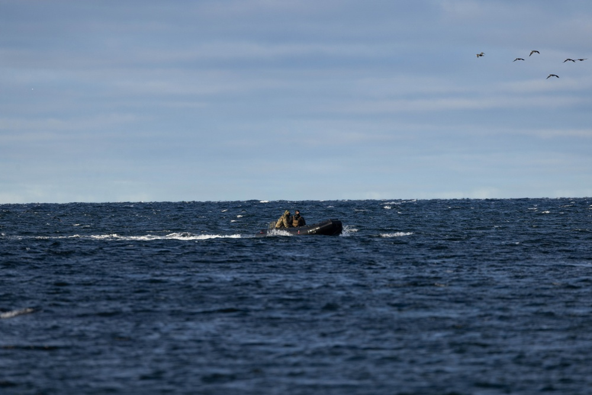

LCpl Isaac Garza / U.S. Marine Corps · DVIDS 10095921 · Public domain · U.S. Marines with Force Reconnaissance Company, 2d Reconnaissance Battalion, 2d Marine Division, conduct boat operations during NATO Enhanced Vigilance Activity Baltic Sentry off the coast of southern Finland, Nov. 7, 2026.
USNI News
Four dozen U.S. Marines with Force Reconnaissance Company, 2d Reconnaissance Battalion, deployed to Finland this week, conducting boat operations off the country's southern coast as part of NATO's Baltic Sentry mission to protect undersea infrastructure in the Baltic Sea
USNI News reports the Marines, forward-deployed with Marine Rotational Force-Europe, were re-tasked to provide maritime domain awareness alongside the Finnish Coastal Brigade during the Finnish Navy's Narrow Waters 26-2 exercise, which runs this week in the coastal areas of southern Finland and the Gulf of Finland. Baltic Sentry is a European-led NATO activity stood up to protect critical undersea cables and pipelines after a string of suspected sabotage incidents, with the Marine Corps serving in a specialized, enabling role alongside the alliance's own naval and coast guard assets.
USNI News · Read source →